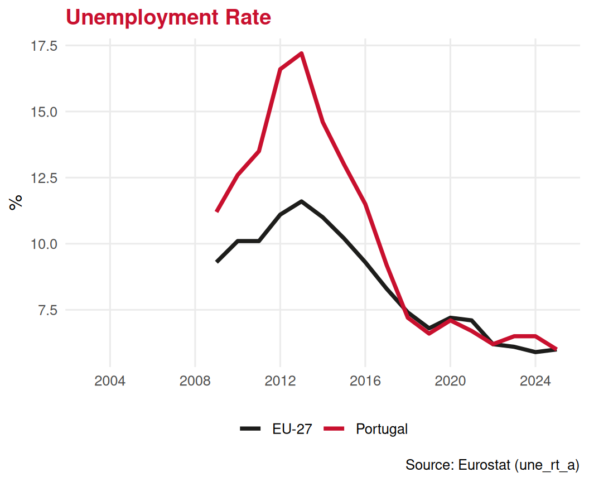
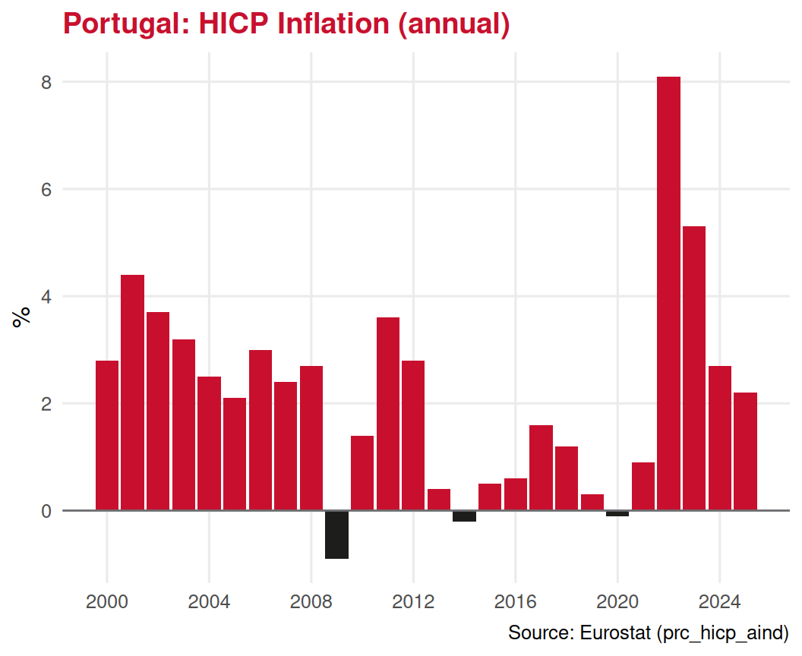
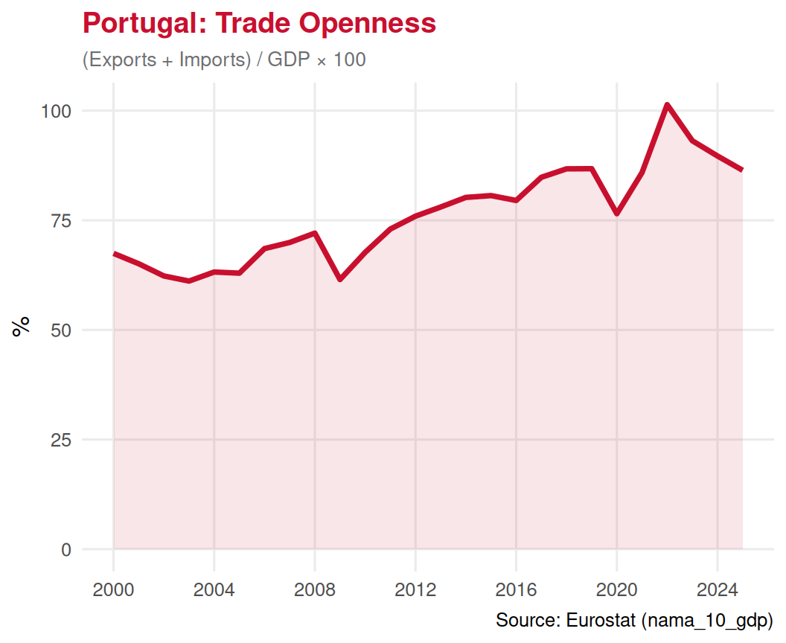
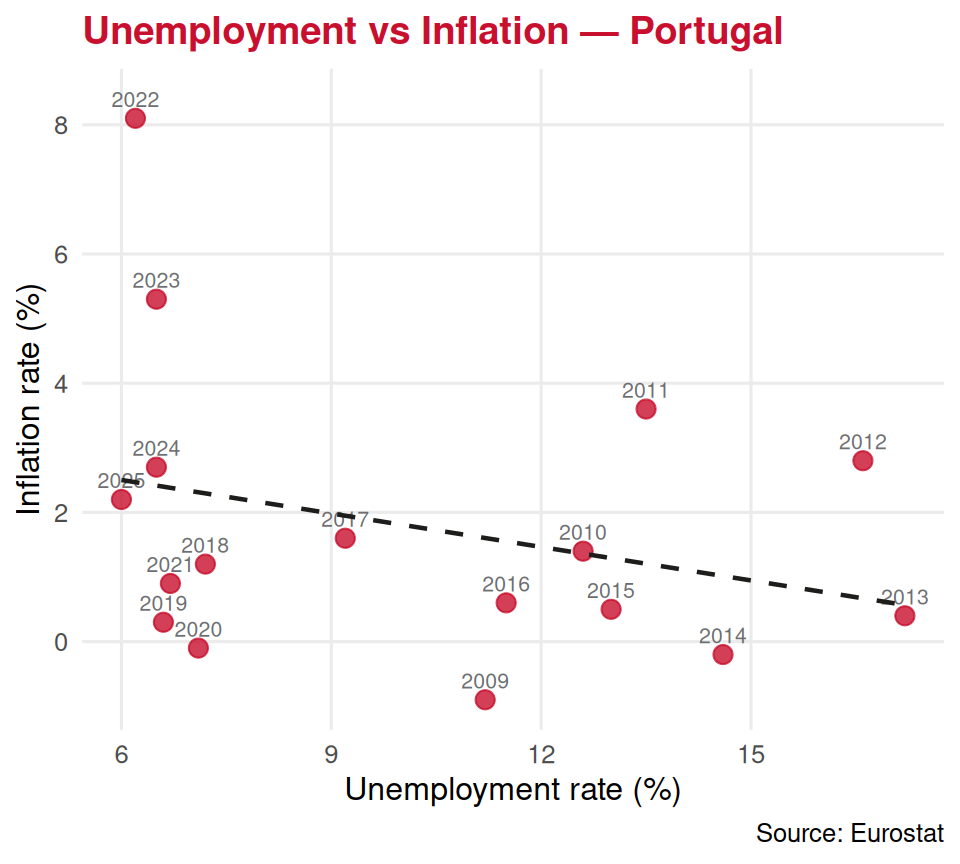

The Panorama of Macroeconomics
Lecture 20: The Main Macroeconomic Issues
Paulo Fagandini
2026
Recap: Where We Have Been ⏪
Microeconomics block 🔬
1️⃣ Fundamentals, scarcity, opportunity cost
2️⃣ Consumer theory — preferences, utility, demand
3️⃣ Producer theory — costs, profit, supply
4️⃣ Market equilibrium — price & quantity
Game Theory block ♟️
5️⃣ Strategic interaction — Nash equilibrium
6️⃣ Sequential games — backward induction
. . .
👉 Today we zoom out 🔭
We move from individual markets to the economy as a whole
Part I: From Micro to Macro
The Key Difference 🔍
🔬 Microeconomics
Studies individual agents and specific markets
- One firm’s pricing decision
- One consumer’s demand for hotel nights
- Equilibrium in the Lisbon restaurant market
🔭 Macroeconomics
Studies the economy as a whole
- Total output of the entire Portuguese economy
- Overall unemployment rate
- The general level of prices (inflation)
Aggregation is the tool that bridges the two. Macroeconomists sum up individual variables — millions of consumers, thousands of firms — into economy-wide totals.
Why Aggregation? 🧩
Imagine trying to manage a flight by tracking every single air molecule in the cabin.
Instead, pilots watch aggregate gauges:
🌡️ Cabin temperature
🌬️ Air pressure
:fuel_pump: Total fuel remaining
. . .
Macroeconomics works the same way. We cannot track every transaction, so we build aggregate indicators that summarize the economy’s health.
| Individual variable | Aggregate |
|---|---|
| Your wage | Total wages in the economy |
| One firm’s output | GDP |
| One hotel’s prices | Overall inflation |
| One worker unemployed | Unemployment rate |
The Macroeconomic Dashboard 📊
Macroeconomics is the study of the performance of the national economy and the policy measures used to improve it.
Six big questions macroeconomists ask:
🌱 Economic growth & living standards
🏭 Productivity
🎢 Recessions & expansions
💼 Unemployment
🔥 Inflation
🌐 Economic interdependence of nations
Part II: The Six Main Issues
🌱 1. Economic Growth & Living Standards
Over the past century, living standards in industrialised countries have improved dramatically.
- Life expectancy up
- Access to health, education, technology
- Real incomes higher
Macroeconomics asks:
- Why do some countries grow faster than others?
- What drives long-run improvements in well-being?
- Can tourism-dependent economies sustain growth?
🏭 2. Productivity
Labour productivity = Output per worker employed
It is the single most important determinant of living standards in the long run.
Why does it matter for tourism?
🏖️ A hotel with better-trained staff can serve more guests at higher quality
✈️ A tour operator using better software books more itineraries per employee
💰 Higher productivity → higher wages → higher living standards
What drives productivity?
📚 Education & training
💻 Technology & capital
⚙️ Better management practices
♻️ Infrastructure (transport, broadband)
👉 Countries that invest in these grow faster and richer
🎢 3. Recessions & Expansions
Economies do not grow smoothly. They experience:
Expansions 📈 — periods of rising output & employment
Recessions 📉 — periods of falling output (two or more consecutive quarters of negative growth)
Why does this matter for tourism?
Tourism is highly cyclical — one of the first sectors to suffer in recessions and one of the first to bounce back in expansions.

💼 4. Unemployment
Unemployment rate = % of people who are willing and able to work but cannot find a job
Key facts:
- Unemployment rises sharply in recessions
- Even in booms, some unemployment always exists (people switching jobs, new graduates entering the market)
- Youth unemployment tends to be much higher than overall unemployment
- Tourism creates a lot of employment — but often seasonal and precarious

🔥 5. Inflation
Inflation = the rate at which the general level of prices rises over time. If inflation is 3%, a basket of goods that cost €100 today will cost €103 next year.
Why does it matter for tourism?
🏨 Higher hotel prices reduce the purchasing power of tourists
✈️ Flight costs affect travel decisions
💱 Inflation differences between countries affect exchange rates and competitiveness
👉 Portugal’s inflation relative to Germany or the UK affects how attractive it is as a destination

🌐 6. Economic Interdependence of Nations
Modern economies are deeply interconnected:
🚢 Trade in goods and services
🏦 International capital flows
💱 Exchange rate fluctuations
🤝 Trade agreements (EU single market, WTO)
For tourism, this is especially visible:
Portugal receives visitors from Germany, the UK, the US, Brazil — each with their own economic cycles, exchange rates, and purchasing power.
👉 A recession in Germany directly reduces tourism demand in the Algarve.

Part III: The Macro Toolkit
How Do Macroeconomists Think? 🔧
Macroeconomics does not just describe problems — it tries to explain and fix them.
Two types of analysis:
📏 Positive analysis
Objective study of cause and effect. “If interest rates rise, what happens to investment?”
⚖️ Normative analysis
Value judgments about what should be done. “Should the government reduce unemployment even if it raises inflation?”
Two main policy levers:
🏦 Monetary policy
Central banks control money supply and interest rates (e.g., the ECB for Portugal)
🧾 Fiscal policy
Government controls taxes and public spending
👉 We will study both in detail in the coming lectures.
The Macroeconomic Policy Triangle 🚩
Policymakers juggle three goals that are often in tension:
📈 Growth — increase output and living standards
💼 Low unemployment — keep people employed
🔥 Low inflation — keep prices stable
. . .
The tension:
Policies that boost growth and cut unemployment often raise inflation.
Policies that reduce inflation often slow growth and raise unemployment.
👉 This is the classic Phillips Curve trade-off (we will revisit this).

Tourism and Macroeconomics 🏖️
Macroeconomic variables directly shape tourism:
📈 GDP Growth
When incomes rise, households spend more on tourism — especially international trips.
Tourism is a normal good with income elasticity > 1 (luxury good behaviour).
💼 Unemployment
High unemployment → lower household incomes → less discretionary spending on travel.
Tourism jobs are often the first cut in downturns.
🔥 Inflation
Rising prices in destination countries reduce price competitiveness.
Exchange rate shifts alter the real cost of foreign travel.
👉 The 2008 financial crisis, COVID-19 in 2020, and the 2022 inflation spike all hit tourism hard and fast — illustrating exactly why macro matters for this industry.
The Road Ahead :map:
Over the next lectures, we will build the macro toolkit piece by piece:
| Lecture | Topic |
|---|---|
| 21 | Aggregation: the concept |
| 22 | GDP: measuring total production |
| 23 | Inflation |
| 24 | Central Banks & Monetary Policy |
| 25 | Fiscal Policy |
| 26 | Balance of Payments |
Exercises
📝 Exercise 1 — Multiple Choice
Which of the following best describes macroeconomics?
(A) The study of how an individual firm decides how much to produce
(B) The study of the performance of the national economy and the policies used to improve it
(C) The analysis of how a single consumer chooses between two goods given a budget constraint
(D) The study of price formation in a single competitive market
Correct answer: (B)
Macroeconomics studies economy-wide outcomes — GDP, unemployment, inflation — and the policies that affect them. Options A, C, and D are microeconomic questions.
📝 Exercise 2 — Multiple Choice
Portugal’s unemployment rate rose sharply after 2008 and again in 2020. Which macroeconomic concept best explains why tourism revenues typically fall during such periods?
(A) Tourism is an inferior good, so demand rises when incomes fall
(B) Inflation is always lower during recessions, making tourism cheaper
(C) Tourism has high income elasticity; falling incomes reduce discretionary travel spending
(D) Monetary policy automatically increases tourism demand during downturns
Correct answer: (C)
Tourism behaves as a luxury/normal good with income elasticity > 1. When unemployment rises and household incomes fall, discretionary spending — like holidays — is cut first. Option A is incorrect (it is a normal good), B is unrelated, and D is wrong.
📝 Exercise 3 — Open Question
Consider the following macroeconomic context for Portugal:
A severe recession hits the Eurozone. GDP contracts by 3%, unemployment rises to 15%, and inflation falls to near zero. The British pound also depreciates 15% against the euro.
(a) Using the macroeconomic issues covered in this lecture, identify three distinct channels through which this scenario affects Portugal’s tourism sector. (6 marks)
(b) For each channel, indicate whether the effect on tourism demand is positive or negative, and briefly justify. (6 marks)
(c) The recession in the Eurozone is accompanied by a strong growth period in Brazil. How might this partially offset the effects identified in (a)? (3 marks)
Solution outline:
(a) Channels: (1) GDP/income of EU tourists falls → less demand from Germany, France, Spain; (2) Unemployment rises → fewer households can afford international travel; (3) GBP depreciation → UK tourists face higher real price for Portuguese holidays.
(b) (1) Negative — lower incomes reduce outbound tourism; (2) Negative — unemployed households cut discretionary travel first; (3) Negative — Portugal becomes 15% more expensive for British visitors.
(c) Brazilian GDP growth → Brazilian tourists have higher incomes and more demand for European travel. Brazil is a key source market for Portugal (language, cultural ties). Positive demand shock from non-EU markets can partially offset EU-origin declines.
Summary 📚
Today we covered:
✅ The micro-macro distinction — individual markets vs economy-wide aggregates
✅ Aggregation as the key tool of macroeconomics
✅ The six main macroeconomic issues: growth, productivity, recessions/expansions, unemployment, inflation, and international interdependence
✅ The two policy levers: monetary and fiscal policy
✅ Why all of this matters directly for tourism
Next lecture (Lecture 21):
🧩 Aggregation — the concept in depth; building up from individual transactions to economy-wide totals
Thank You! 👋
Questions?
📧 paulo.fagandini@ext.universidadeeuropeia.pt
Next class: Wednesday, May 7th, 2026

Economics of Tourism | Lecture 20